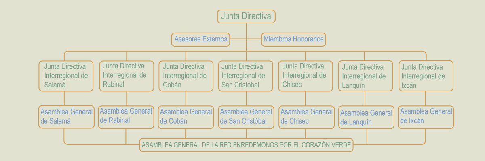

Las organizaciones que pueden pertenecer a la Red son: Organizaciones comunitarias, Organizaciones Indígenas, Organizaciones no Gubernamentales Nacionales e Internacionales, Organizaciones Privadas, Redes, Municipalidades, Mancomunidades y Organizaciones Gubernamentales. Y todos forman parte de la Asamblea general, el máximo órgano dentro de la red, así también, es importante conformar las juntas directivas locales y regional, tal como se manifiesta en la estructura aprobada, para asegurar la representatividad de la población.
Beneficios de pertenecer a la red
- Desarrollo socioeconómico y ambiental de la región
- Intercambio de experiencias entre los miembros de la red
- Intercambio de experiencias a nivel internacional
- Técnicas con personal especializado
- Talleres de formación y capacitación
- Cursos, talleres internacionales de capacitación especializada
- Facilitación a apertura de mercados a nivel regional, nacional, e internacional
- Accesibilidad crediticia con mayor facilidad
- Alianzas de comercialización entre los miembros de la red
- Ferias de comercialización
- Publicaciones técnicas
- Facilitación a la realización de propuestas de proyectos
- Facilitación a la entrada de programa de incentivos forestales
Requisitos de Afiliación
- Pertenecer a algún tipo de organización que pueda ser miembro de la red
- Solicitar y llenar el formulario de inscripción
- Contar con personería jurídica de la organización
- Pagar la inscripción y una cuota anual por acceder a los beneficios de la red